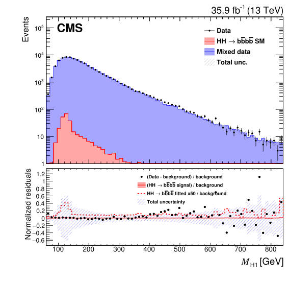
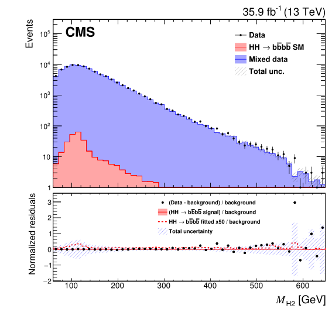

5.8 Analysis Results
This section includes the experimental results of the search of non-resonant Higgs pair production with CMS data collected during 2016 at the LHC. The final summary statistic is the distribution of a probabilistic classifier output, which was trained on simulated events of SM HH production and events resulting from the data-driven background estimation technique described in Section 5.6. Specifically, a non-parametric sample likelihood composed by a product of Poisson count likelihoods is used, where each Poisson factor represents a bin of the distribution of the classifier output, in an analogous manner to Equation 3.28. The classifier distribution was initially divided in 80 equal sized bins, and the expected number of counts from each mixture component and their variations due to nuisance parameters were estimated using simulated observations under the SM hypothesis and each of the BSM EFT points considered for the signal, and from the bias corrected distribution for the data-driven background dataset.
Given the slight mis-modelling observed in the lower range of the classifier output on the control regions discussed in Section 5.6.2, a study studying the variation of the expected limit when a non-zero minimum value is considered in the likelihood binning was carried out. It was found that restricting the fit to classifier output values larger than 0.2 resulted on a negligible loss on sensitivity (i.e. smaller than 2%) while greatly improving the overall data-background compatibility. For this reason, onty the rightmost 64 of the initial 80 bins of the classifier distribution are used to build the Poisson likelihood used for statistical inference. The best-fit distributions for signal, background and data for the classifier output are shown in Figure 5.14, while the those corresponding to the reconstructed Higgs boson masses are shown in Figure 5.15.
Figure 5.14: Results of the for best fit of the statistical model of BDT classifier output distribution for the SM HH production signal for the observed data. In the lower panel a comparison is shown between the best fit signal and best fit background subtracted from measured data. The dashed band in the lower panel, centred at zero, shows the total uncertainty. Figure adapted from [148].

Figure 5.15: Distributions of the reconstructed Higgs masses for the best fit. A correction factor obtained from the binned classifier distribution, as described in Section 5.6.2, has been applied as a weight to the mixed dataset. Figures adapted from [148].. a — leading Higgs mass \(M_{\textrm{H}_1}\), b — trailing Higgs mass \(M_{\textrm{H}_2}\)
Only two mixture components are considered in the final statistical model, signal representing \(\textrm{pp} \rightarrow \textrm{HH} \rightarrow \textrm{b}\bar{\textrm{b}}\textrm{b}\bar{\textrm{b}}\), and background estimated from data and dominated by QCD multi-jet processes and secondarily by top quark production with additional jets. The contribution from other hard processes that can produce four b-quarks, such as \(\textrm{t}\bar{\textrm{t}}\textrm{H}\), \(\textrm{Z}\textrm{H}\), \(\textrm{b}\bar{\textrm{b}}\textrm{H}\), and single Higgs boson production was estimated from simulated samples and found to be negligible in comparison with the considered background uncertainties at the current level of experiment sensitivity.
The same statistical model is used to obtain he observed and expected 95% confidence level (CL) upper limits for non-resonant \(\textrm{pp} \rightarrow \textrm{HH} \rightarrow \textrm{b}\bar{\textrm{b}}\textrm{b}\bar{\textrm{b}}\) production, using the asymptotic approximation [100] of the \(\textrm{CL}_\textrm{s}\) criterion [101], [102], [184], and the so-called LHC test statistic, that is based on the profile likelihood ratio. All the nuisance parameters are treated by profiling the likelihood. The median expected and observed upper limits for the SM Higgs pair production, as well as the expected limit 1 and 2 standard deviation intervals around the median are included in Table 5.5. The median expected limit obtained for SM HH production is \(419\ \textrm{fb}\), which corresponds to approximately 37 times the SM expectation, which can be obtained by taking the cross section from Equation 5.1 and multiplying it by the \(\textrm{b}\bar{\textrm{b}}\textrm{b}\bar{\textrm{b}}\) decay branching fraction. The obtained observed limit is \(847\ \textrm{fb}\), which is about two standard deviations above the expected limit. To facilitate the comparison with the analyses carried out in other channels, the observed limit corresponds to \(\sigma \left ( \textrm{pp} \rightarrow \textrm{HH} \right ) = 2496\ \textrm{SM}\) as an upper limit the inclusive HH production cross section of SM-like processes.
Table 5.5: Observed and expected upper limits on \(\sigma(\textrm{pp} \rightarrow \textrm{HH} \rightarrow \textrm{b}\bar{\textrm{b}}\textrm{b}\bar{\textrm{b}})\) in the SM at 95% CL in units of fb.
The same procedure was carried out for each of the EFT benchmarks previously listed in Table 5.1, by re-weighting the simulated HH production observation as discusses and evaluating the signal distribution under each BSM model considered. The observed and expected limits obtained for each of the benchmark points are provided in Table 5.6. The observed and expected limits are also graphically compared between the various EFT points and the SM in Figure 5.16. The observed limits are also found about two standard deviations over the median expected limits, which can be explained by taking into account that the same classifier and thus the same background model (and its associated fluctuations) is considered in the statistical model for all the inference procedures. In particular, the last bins of the classifier distribution for the data-driven background prediction has a small deficit compared to the observed data, as can be seen in Figure 5.14.
Table 5.6: Observed and expected upper limits on the \(\sigma(\textrm{pp} \rightarrow \textrm{HH} \rightarrow \textrm{b}\bar{\textrm{b}}\textrm{b}\bar{\textrm{b}})\) cross section for the 13 BSM benchmark models listed in Table 5.1 at 95% CL in units of fb.
![Figure 5.16: Graphical comparison between the observed and expected upper limits at 95% CL on the \sigma(\textrm{pp} \rightarrow \textrm{HH} \rightarrow \textrm{b}\bar{\textrm{b}}\textrm{b}\bar{\textrm{b}}) cross section for the SM and the 13 BSM models investigated. The inner green bands and the outer yellow bands and correspond to the range of percentiles around the median that contain the 68% and 95% times the upper limit under the background-only hypothesis. See Table 5.1 for their respective EFT parameter values. Figure adapted from [148].](gfx/105_chapter_5/Figure_009.svg)
Figure 5.16: Graphical comparison between the observed and expected upper limits at 95% CL on the \(\sigma(\textrm{pp} \rightarrow \textrm{HH} \rightarrow \textrm{b}\bar{\textrm{b}}\textrm{b}\bar{\textrm{b}})\) cross section for the SM and the 13 BSM models investigated. The inner green bands and the outer yellow bands and correspond to the range of percentiles around the median that contain the 68% and 95% times the upper limit under the background-only hypothesis. See Table 5.1 for their respective EFT parameter values. Figure adapted from [148].
In addition to the BSM benchmarks, limits are also obtained for the cross section times branching ratio of Higgs pair production processes in the EFT framework, varying \(\kappa_\lambda\) in the range \([-20,20]\), while assuming that \(\kappa_\textrm{t}=1\) and the rest of the couplings are zero. The results are shown in Figure 5.17, noting that the upper limit changes considerably in this range because the distribution of the final state properties change considerably, and consequently the associated efficiency for the process also varies. The EFT cross section prediction as a function of \(\kappa_\lambda\) and keeping \(\kappa_\textrm{t}=1\) is also shown in the previous figure, noting that no values of \(\kappa_\lambda\) can be excluded at the current level of experimental sensitivity.
![Figure 5.17: Observed and expected \sigma(\textrm{pp} \rightarrow \textrm{HH} \rightarrow \textrm{b}\bar{\textrm{b}}\textrm{b}\bar{\textrm{b}}) cross section limits at 95% CL for values of \kappa_\lambda in the [-20,20] range, assuming \kappa_\textrm{t} = 1. The inner green band and the outer yellow bands correspond to the range of percentiles around the median that contain the 68% and 95% times the upper limit under the background-only hypothesis. the theoretical prediction with \kappa_\textrm{t} = 1 is also shown in red colour. Figure adapted from [148].](gfx/105_chapter_5/Figure_010.svg)
Figure 5.17: Observed and expected \(\sigma(\textrm{pp} \rightarrow \textrm{HH} \rightarrow \textrm{b}\bar{\textrm{b}}\textrm{b}\bar{\textrm{b}})\) cross section limits at 95% CL for values of \(\kappa_\lambda\) in the [-20,20] range, assuming \(\kappa_\textrm{t} = 1\). The inner green band and the outer yellow bands correspond to the range of percentiles around the median that contain the 68% and 95% times the upper limit under the background-only hypothesis. the theoretical prediction with \(\kappa_\textrm{t} = 1\) is also shown in red colour. Figure adapted from [148].